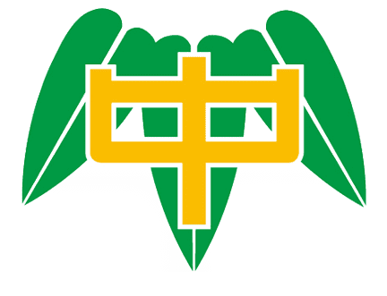

國立臺灣師範大學師範大學物理學系
就讀期間：2021.09 - 2025.07

國立新竹高級中學
就讀期間：2018.09 - 2021.07
Major in Physics in National Taiwan Normal University
Time and efficiency are what I yearn for and have the courage to try and challenge.
就讀期間：2021.09 - 2025.07
就讀期間：2018.09 - 2021.07
⽗母給予的教育以態度與自律為重，求學階段⼀概給予孩⼦追求自我目標的權利。從國小⾄今，學習到的七⼤能⼒：⾏動、計畫、思考、變通、自省、謹慎以及記憶⼒，才是⽗母對於孩⼦的期待，常以「態度決定⾼度」為培養理念，讓孩⼦在理想且安全的教育環境下成長。在⽗母的細⼼栽培下，身為孩⼦的我，為了不辜負⽗母的用⼼，努⼒著不斷追求自己的理想與更⾼且更好的境界。
國中時期的我，課業上的問題時常是在社群討論區解決的，使我能夠在學科上奠定良好的基礎。他們的教學熱忱，促成了我在國三會考結束後，主動的回到社群中去幫助其他的學弟妹；⾄今已經三年，除了在萬⼈物理解題社群中獲得了全體答題率第七名的榮耀外，也得到了不少學弟妹的稱讚與肯定。林林總總的支持與回饋造就了我對於教學他⼈充滿著強烈的熱忱，希望能夠藉由教學與幫助他⼈的⽅式，將曾經受恩無量的恩情傳承下去，去影響、去擴展到更多的學⽣。
我是⼀個正向樂觀的⼈。時常以正面思考的⽅式去修正、去克服，並且在他⼈有困難時，以傾聽的⽅式陪伴他⼈(同學、家⼈等等)⼀同度過難關，引領他⼈往更好的境界發展。使他⼈不會因阻礙⽽討厭物理，⽽是以解題後的成就感培養對於物理學科的熱忱，並且把此份無私的幫助傳承下去。
我也是個喜愛與⼈共處互動的社交愛好者，在學科⽅面上盡⼒追求後，不妨會去參加或承辦不同的活動，去擴展自⼰的社交圈。也因為如此，我創辦了⼀支學術性的讀書紀錄帳，在閒暇時間，去幫助他⼈解決物理科問題，去認識全國各地不同的學⽣、老師等等。
高中時期所創建之學術分享帳，因長期的分享與協助學弟妹解決物理學科上的種種問題而受到親睞。在一次的台大電機系葉丙成教授演講過程中，交大化學系的教授在媒體面前讚揚我的帳號與付出，因而受到天下雜誌教育專欄的推薦。
前往頁面
前兩次參與了此類數理能力競賽並無獲得良好的成績，直到最終的第四屆與第五屆才依序獲得了銅牌與銀牌，說明了雖然天賦不如人，但只要肯努力終能獲得回報。不要因為一次的失敗而氣餒，才是參與這項競賽所獲得的最佳心得。

我記得是高一剛開學就追蹤你了，那時候的限動的確每天都很多則，但我覺得很中肯很直接很real，每次那個字都很小我都要慢慢看。追蹤兩年半的時間我覺得你那個幫助人的心還是不變的 👍 然後之前你分享很多的那些筆記資源呀 真的很實用，還好那些有典藏的我之前有先截圖(應該沒關係吧...沒外流)，謝謝你！ 這些資源在學測的路上幫我很大。 我記得還有一個以前你很常半夜凌晨發限動😂 現在好像比較少了可以回fb發😂 紫色在手機上看是真的有點亮(關燈在床上看)心得紀錄有時候嗆別人的很有趣(心情不好的時候最適合看) , 有時候又是很有深度的言論🤔那個之後9月我也會變大學生了我也可以跟你領取普物普化的筆記嗎🤗 可惜我是男的在離公館超近，但約出來吃蛋糕感覺怪怪特別的😂😂
我覺得這個帳號跟其他帳號都很不同，同時也因為不會和其他帳號重複性太高，所以我才會 選擇追蹤。高一的時候我還滿不喜歡物理的，而且同時也因為學的不夠深，基本上每次的內 容我都沒有參與，但我還是看完了，漸漸的，也慢慢對物理產生興趣，對各種不一樣的解法 產生好奇，而且你願意花時間幫助大家解題，提供大家各種升學資訊，對我幫助很大。前陣 子看到限動上說有人批評這個帳號不像讀書帳時，覺得感觸滿多的，也希望這個帳號不要改 變，正因為這個帳號的不同，所以我才會願意花時間看，希望你能一直堅持下去。
晚上好~我也是潛水的粉絲🙋，剛剛看了你的直播講了許多故事，最後決定也浮出水面一下(?)很謝謝你帶給大家很多資源還有在高一高二時讓我更有動力讀書(因為限動真的蠻多的哈哈)。之前也有跟到戴蛙鏡的直播XDD 很可惜那時隔天有事不能跟到最後，總而言之真的很感謝!!BTW,剛剛聽你提到明天要去淡水玩，我是淡水人，建議多穿一點才能在雨中享受浪漫(?)下雨+冬天真的又濕又冷，如果出太陽的話可以騎腳踏車去漁人碼頭，風景也很不錯!最後，祝你未來能在遇到難關時一一破解。新年快樂🎉